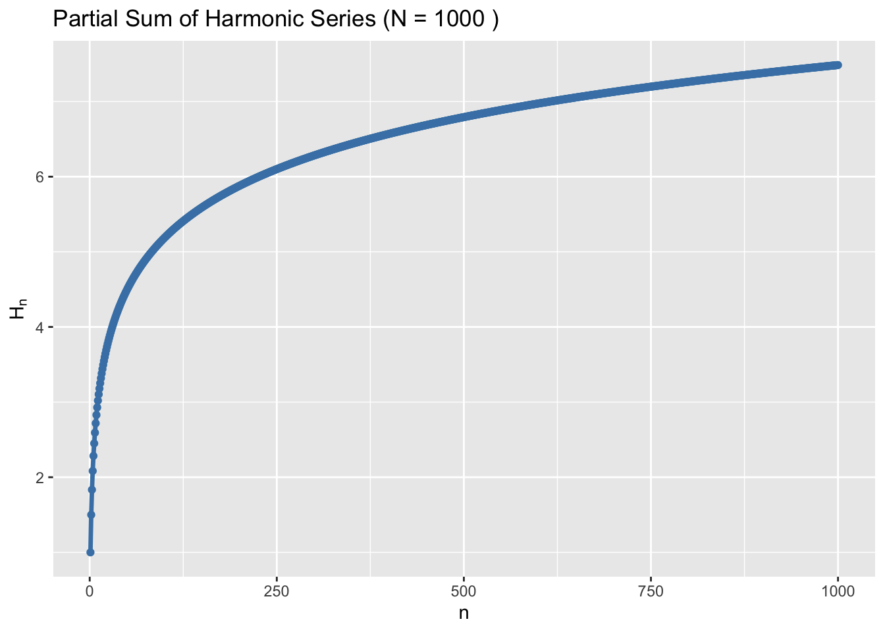

The concept of reducibility has always fascinated me - the fact that you can take an unbelieveably complex thing and elegantly express it a single thing that can fit on the margins of a page. An interesting example of this is the Riemann Zeta function.
1 Riemann Zeta Function
The Riemann Zeta function is a behemoth that has been a well-trodden path for centuries of mathematicians. It can expressed so simply: \[ \zeta(s) = \sum_{n=1}^\infty \frac{1}{n^s} \textrm{ where } s\in \mathbb{C} \]
…and yet so much can be unpacked from it as we shall soon see. Let’s look at different cases of \(s\in \mathbb{Z}\) to see if we can find any insights. Here we assume only the basic laws of arithmetic (ie. no complex analysis and hence no analytic continuation).
If \(s \leq 0\), we are either adding the same number or a bigger number forever. There is no way the final sum can be finite, so we say the series diverges in this case \(\zeta \to \infty\).
If \(s > 0\), we are adding smaller and smaller numbers forever. This is a bit more tricky. If the numbers get small enough fast enough, then we expect the final sum to converge to something finite. Otherwise it will diverge.
Let’s get a feel for this by considering the cases: \(s=-1,1,2\).
1.1 Part I: \(s=-1\): The Triangular Numbers
For \(s=-1\): \[ \zeta(-1) = 1 + 2 + 3 + 4 + \dots \] We already know this series will diverge, so that’s boring. Let’s think about something less trivial. Rather than add numbers up forever, we only add up to the number \(N\). We call this a partial sum 1: \[ \zeta_N(-1) = \sum_{n=1}^N \frac{1}{n^{(-1)}}=1+2+3+\dots + N \] Obviously we can calculate this by simply adding every number up until \(N\), but can we find a shortcut to do this computation? Let’s try get some intuition by writing down the first few values of \(N\):
| \(N\) | \(\zeta_N(-1)\) |
|---|---|
| 1 | 1 |
| 2 | 3 |
| 3 | 6 |
| 4 | 10 |
It may not be obvious, but there is a pattern here. The result is what’s called the “Triangular Numbers” (\(T_N\)). The namesake is clear from the following diagram:

How do we figure out the formula for \(T_N\)? We do this by making a rectangle with dimension \(N \times (N+1)\), and then noting that the triangular numbers are always half of this rectangle.
For \(N=2\), we make a \(2\times3=6\) rectangle, and note that \(T_2 =3\).
For \(N=3\), we make a \(3\times4=12\) rectangle, and note that \(T_3 = 6\).
For \(N=4\), we make a \(4\times 5 = 20\) rectangle, and note that \(T_4=10\).
So we propose a formula: \[ T_N = \zeta_N (-1) = \frac{N(N+1)}{2} \] We have shown this is true for the first few values of \(N\), but how do we know this is always true? We can prove this by induction.
For the base case of \(N=1\), we know that \(T_1=1\).
Let’s assume the formula is true for the case \(T_k\), so we have: \[ T_k = \frac{k(k+1)}{2} \] What about \(T_{k+1}\)? Well let’s see what we get when we add \(k+1\) to the above: \[ \begin{align*} T_{k+1} &= \frac{k(k+1)}{2} + (k+1) \\ &= \frac{k(k+1)+2(k+1)}{2} \\ &= \frac{(k+1)(k+2)}{2} \\ &= \frac{(k+1)((k+1)+1)}{2} \end{align*} \] We never assumed the formula was true for \(T_{k+1}\), but we stumbled on the formula for that case by just taking \(T_{k}\) and adding \(k+1\) to it! Since I never specified what \(k\) was, we know this logic is true for any \(k \in \mathbb{N}\). If \(k=1\), then we know the formula holds true for \(k=2\). If we know the formala holds true for \(k=2\), it must also hold true for \(k=3\). So we have proven this fomula is true in general \(\forall k \in \mathbb{N}\) how neat is that!
This means we don’t need to keep adding terms to compute \(T_N\). We just need to apply the formula! For example: \[ T_{1000} = \frac{1000(1000+1)}{2} = 500500 \]
1.2 Part II: \(s=1\): The Harmonic Series
For \(s=1\): \[ \zeta(1) = 1 +\frac{1}{2} + \frac{1}{3} + \frac{1}{4} + ... \] This is called the “Harmonic Series” because it represents the wavelengths of harmonics in music. If the fundamental wavelength is \(1\), then the wavelength of the next harmonic is half, then the next is a third and so on.
We can see each term in our sum getting smaller and smaller. But does it get small enough fast enough? Let’s have a look:
It looks like it’s flattening out to some finite value… but looks can be deceiving. This series actually diverges! It diverges really really slowly, but nonetheless it diverges. Let’s prove that shall we? Ignoring the first two terms, let’s start by grouping by \(2^n\). That is, twos, fours, eights etc. \[ \zeta(1) = 1 + \frac{1}{2} + \left( \frac{1}{3} + \frac{1}{4} \right) + \left( \frac{1}{5} + \frac{1}{6} + \frac{1}{7} + \frac{1}{8} \right) + ... \] We notice something intriguing. Each group is slightly bigger than half.
For our first parenthesis: \[ \left( \frac{1}{3} + \frac{1}{4} \right) > \left( \frac{1}{4} + \frac{1}{4} \right) = \frac{1}{2} \] For our second parenthesis: \[ \left( \frac{1}{5} + \frac{1}{6} + \frac{1}{7} + \frac{1}{8} \right) > \left( \frac{1}{8} + \frac{1}{8} + \frac{1}{8} + \frac{1}{8} \right) = \frac{1}{2} \] If we put this together: \[ \zeta(1) > 1 + \frac{1}{2} + \frac{1}{2} + \frac{1}{2} + ... \to \infty \quad \therefore \quad \zeta(1) \to \infty \]
- The sum of adding \(\frac{1}{2}\) is smaller than the Harmonic series.
- If you add the same number over and over again forever, your sum will diverge.
- Since a smaller series diverges, the bigger series (ie. Harmonic Series) has to diverges.
Congratulations, you just used the creatively named comparison test to prove the Harmonic Series diverges 🥳 But it turns out this is the limit! Any smaller and your series will converge! So \(\zeta(s)\) is actually finite for \(s>1\).
1.3 Part III: \(s=2\): The Basel Problem
For \(s=2\): \[ \zeta(2) = 1 +\frac{1}{4} + \frac{1}{9} + \frac{1}{16} + ... \] I mentioned (without proof), we expect this to converge. But what does it converge to? This is historically called the “Basel 2 Problem” which none other than the famous Lenoard Euler himself solved.
This proof is quite beautiful and takes us on a scenic route by expanding \(g(x)=\frac{\sin(x)}{x}\). We will expand this function in two different ways and then when we put it together, \(\zeta(2)\) magically falls out 🪄
1.3.1 ➕ Taylor Expansion
The Taylor expansion gives us a way to approximate any function3, by taking an infinite SUM of polynomials. The Taylor expansion of the function \(f(x)\) around the point \(x=0\) is: \[ f(x) = \sum_{n=0}^\infty \frac{f^{(n)}(0)}{n!}x^n = f(0) + f'(0)x + \frac{f''(0)}{2} x^2 + \dots \]
If we take a Talyor expansion of \(g(x)\): \[ \begin{align*} \sin(x) &= x - \frac{x^3}{3!} + \frac{x^5}{5!} + \dots \\ g(x) = \frac{\sin(x)}{x} &= 1 - \frac{x^2}{3!} + \frac{x^4}{5!} + \dots \end{align*} \]
We’ll come back to this.
1.3.2 ✖️ Polynomial Expansion
If we take a polynomial (even if it’s a infinite one), we can re-express that as an infinite PRODUCT of all its roots. This is called the Fundamental Theorem of Algebra4. Now we know when \(\sin(x)=0\) then \(x=\pm\pi, \pm 2\pi, \dots\), so: \[ \begin{align*} \sin(x) &= \left(x-\pi\right)\left(x+\pi\right)\left(x-2\pi\right)\left(x+2\pi\right) \dots \\ g(x) = \frac{\sin(x)}{x} &= \left(1-\frac{x}{\pi}\right)\left(1+\frac{x}{\pi}\right)\left(1-\frac{x}{2\pi}\right)\left(1+\frac{x}{2\pi}\right) \dots \end{align*} \] Let’s collect all the \(x^2\) terms. How do we go about doing this? Here are a few points of intuition:
- When expanding the sum, we need to take either the left (\(1\)) or the right (\(-\frac{x}{\pi}\)) term.
- For any \(x^2\) terms, you must take 2 right terms and the rest left.
- Since this is a symmetric function, any choice of the 2 right terms that don’t match (eg. \(-\frac{x}{\pi}\) and \(-\frac{x}{2\pi}\)) will have a counterpart and cancel out.
- The only terms remaining is if the 2 right terms DO match.
Using this intuition, our sum simplifies to : \[ \begin{align*} g(x) = 1 - \left(\frac{1}{\pi^2} + \frac{1}{4\pi^2} + \frac{1}{9\pi^2} + \dots \right)x^2 + \dots \end{align*} \]
Oooo do you see that? Does that look familiar? We’re almost there 💪
1.3.3 ✨ Putting this together
If we match the \(x^2\) term from our two methods we get: \[ \begin{align*} -\left( \frac{1}{\pi^2} + \frac{1}{4\pi^2} + \frac{1}{9\pi^2} + \dots \right) &= -\frac{1}{3!} \\ \left( 1 + \frac{1}{4} + \frac{1}{9} + \dots \right) \frac{1}{\pi^2} &= \frac{1}{3!} \\ 1 + \frac{1}{4} + \frac{1}{9} + \dots &= -\frac{\pi^2}{6} \end{align*} \]
But wait, the left handside is exactly \(s=2\) case! So we have basically proved: \[ \zeta(2) = \frac{\pi}{6} \]
What just happened? By relating the Taylor expansion of \(\frac{\sin(x)}{x}\) with its roots, we have found \(\zeta(2)\) embedded in the coefficients. Moreover, we just related the mathematics of infinite series (analysis) with the mathematics of circles (geometry) where the \(\pi\) comes from. Isn’t that just so COOL? Being able to find a connection in an unlikely place.
It turns out that for cases where \(s\) is a positive even integer, a generalised method can be used to find the formula for those case.
2 Conclusions
We have barely scratched the surface of Riemann Zeta functions. We looked at the \(s=-1\) case where we found triangular numbers. Then we looked at \(s=1\) where we proved the harmonic series diverges. Finally we followed the elegant path of Euler in deriving the value for the \(s=2\) case.
Footnotes
Here a sum is typically assumed to be infinitely long unless otherwise stated.↩︎
Presumably named after Basel, Switzerland where the problem was posed.↩︎
Assuming it’s well-behaved enough… I’m looking at you Weierstrass. It basically needs to be differentiable.↩︎
I mean kind of, it’s more of a corollary to this but close enough.↩︎